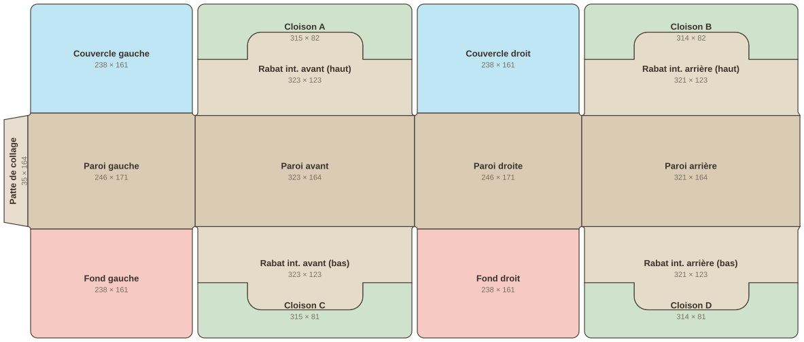

Géométrie extraite des tracés vectoriels, pas d'une image. Planche 1171 × 493 mm, origine en haut à gauche. Vérifie les noms : c'est sur eux que sera construite la hiérarchie.

Exactement ce que contient le MaxScript et la maquette interactive. Le pivot est posé sur la ligne de pli, dans le plan de la peau extérieure (z = 0). Angle négatif = la face part vers l'arrière du patron.
| Objet | Cotes | Pivot | Axe | Angle | Parent |
|---|---|---|---|---|---|
| paroi_avant | 323 × 164 | 442,5 / 246,5 | — | racine | — |
| paroi_gauche | 246 × 171 | 281 / 246,5 | Y | −90° | paroi_avant |
| paroi_droite | 246 × 171 | 604 / 246,5 | Y | +90° | paroi_avant |
| paroi_arriere | 321 × 164 | 850 / 246,5 | Y | +90° | paroi_droite |
| patte_collage | 35 × 164 | 35 / 246,5 | Y | −90° | paroi_gauche |
| couvercle_gauche | 238 × 161, r10 | 158 / 332 | X | −90° | paroi_gauche |
| couvercle_droit | 238 × 161, r10 | 727 / 332 | X | −90° | paroi_droite |
| fond_gauche | 238 × 161, r10 | 158 / 161 | X | +90° | paroi_gauche |
| fond_droit | 238 × 161, r10 | 727 / 161 | X | +90° | paroi_droite |
| rabat_int_avant_haut | 315 × 83 + languette | 442,5 / 328,5 | X | −90° | paroi_avant |
| rabat_int_avant_bas | 315 × 83 + languette | 442,5 / 164,5 | X | +90° | paroi_avant |
| rabat_int_arriere_haut | 314 × 83 + languette | 1010,5 / 328,5 | X | −90° | paroi_arriere |
| rabat_int_arriere_bas | 314 × 83 + languette | 1010,5 / 164,5 | X | +90° | paroi_arriere |
| cloison_A | 315 × 81,5, encoche | 442,5 / 411,5 | X | −90° | rabat_int_avant_haut |
| cloison_B | 314 × 81,5, encoche | 1010,5 / 411,5 | X | −90° | rabat_int_arriere_haut |
| cloison_C | 315 × 81,5, encoche | 442,5 / 81,5 | X | +90° | rabat_int_avant_bas |
| cloison_D | 314 × 81,5, encoche | 1010,5 / 81,5 | X | +90° | rabat_int_arriere_bas |
Patte 35 + gauche 246 + avant 323 + droite 246 + arrière 321 = 1171 mm. Les 321 au lieu de 323 sur l'arrière, c'est le jeu de fermeture sur la patte.
4 panneaux de 238 × 161, deux par deux. 161 + 161 = 322 pour 323 de long : le millimètre manquant est le jeu central dont on parlait.
Les rabats font 123 de profondeur : 123 + 123 = 246, la largeur exacte. Chaque cloison de 81,5 est solidaire de son rabat et le chevauche de 40 mm — c'est la languette qui vient dans l'encoche.
Les parois latérales mesurent 171 et non 164 : 3,5 mm de débord haut et bas. Oreilles de reprise, ou tolérance de tracé ?